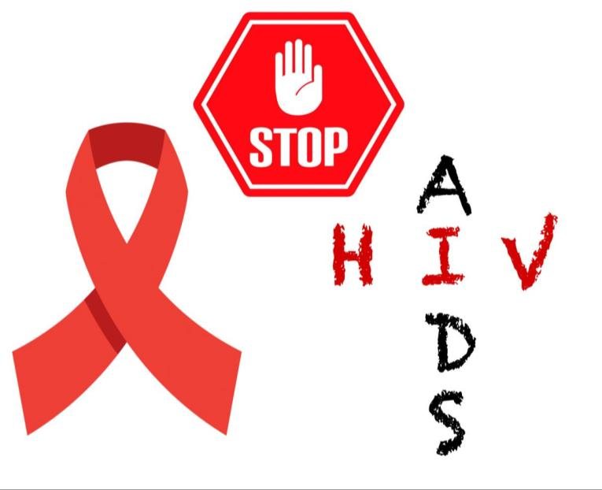

Apakah HIV menular?
Tanggal: 05 November 2022
Human Immunodeficiency Virus (HIV) adalah virus yang menyerang sistem kekebalan tubuh manusia. Penyebaran HIV terutama terjadi melalui kontak dengan darah, cairan tubuh seperti air mani, cairan vagina, cairan anal, serta penggunaan jarum suntik yang terkontaminasi. Pertanyaan umum yang sering muncul adalah apakah HIV menular? Untuk menjawab pertanyaan ini, penting untuk memahami cara penyebaran dan faktor-faktor yang meningkatkan
HIV tidak dapat menyebar melalui kontak sehari-hari, seperti bersin, berjabat tangan, menggunakan toilet bersama, atau menggunakan peralatan makan yang sama. Virus ini juga tidak dapat menular melalui udara, air, atau makanan. Penularan HIV terutama terjadi melalui tiga jalur utama: hubungan seksual tanpa pengaman, penggunaan jarum suntik yang terkontaminasi, dan dari ibu kepada bayi selama kehamilan, persalinan, atau menyusui.
Dalam rangka mempertahankan kesehatan dan mencegah penularan HIV, berikut adalah langkah-langkah penting yang dapat Anda ambil:
- Pendidikan dan Kesadaran: Penting untuk mendapatkan pengetahuan yang akurat tentang HIV dan bagaimana virus ini ditularkan. Pendidikan yang baik dan kesadaran yang tinggi akan membantu Anda menghindari tindakan berisiko dan memahami tindakan pencegahan yang efektif.
- Hubungan Seksual yang Aman: Saat terlibat dalam hubungan seksual, penting untuk menggunakan kondom secara konsisten dan dengan benar. Kondom merupakan salah satu cara yang efektif dalam mencegah penularan HIV dan penyakit menular seksual lainnya. Jika Anda memiliki pasangan yang terinfeksi HIV, konsultasikan dengan profesional kesehatan untuk mempelajari cara mengurangi risiko penularan.
- Pemakaian Jarum Suntik yang Aman: Jika Anda menggunakan jarum suntik, pastikan untuk menggunakan jarum baru dan steril setiap kali. Hindari berbagi jarum suntik dengan orang lain. Jika Anda menggunakan jarum suntik dalam konteks medis atau pengobatan, pastikan bahwa peralatan yang digunakan steril dan aman.
- Tes dan Konseling HIV: Penting untuk menjalani tes HIV secara teratur, terutama jika Anda memiliki risiko tertentu. Tes HIV dapat dilakukan secara anonim dan rahasia di fasilitas kesehatan yang sesuai. Dalam banyak negara, tes HIV dan konseling dapat diakses secara gratis atau dengan biaya yang terjangkau.
- Terapi Antiretroviral (ARV): Jika Anda telah didiagnosis positif HIV, penting untuk memulai dan mematuhi terapi antiretroviral (ARV). ARV adalah pengobatan yang efektif dalam menghambat perkembangan virus dan mempertahankan tingkat virus HIV yang rendah dalam tubuh. Terapi ARV juga membantu menjaga sistem kekebalan tubuh Anda tetap kuat dan melindungi kesehatan Anda secara keseluruhan.
- Dukungan dan Pemulihan: Setelah didiagnosis positif HIV, penting untuk mencari dukungan dari keluarga, teman, dan tenaga medis yang berpengalaman. Dukungan sosial dan pemulihan emosional sangat penting dalam menghadapi HIV dan menjaga kesehatan mental Anda.
Mempertahankan kesehatan dengan HIV melibatkan pengambilan langkah-langkah pencegahan yang tepat dan akses ke perawatan medis yang baik. Dengan pengetahuan yang tepat, perilaku yang bertanggung jawab, dan dukungan yang memadai, kita dapat meminimalkan risiko penularan HIV dan menjaga kesehatan baik diri sendiri maupun orang-orang di sekitar kita.